Two drawers, each a painted front (a poplar frame around a plywood panel) screwed to a 1/2 in Baltic birch box on Blum 563H runners. Every picture here is cut from the bench model, so the sizes match the cut list. Inches throughout.
The drawer front is a frame with a panel in the middle, like a small Shaker door. The panel's rabbets are what let it fit the frame. The top rail has a groove along its lower (inner) edge, and the panel's top tongue fits into that groove, the same way its bottom tongue fits into the bottom rail. So the top rabbet makes the tongue that the top rail's groove holds (drawing 2B).
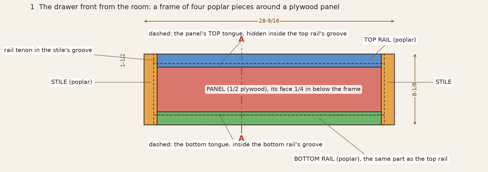
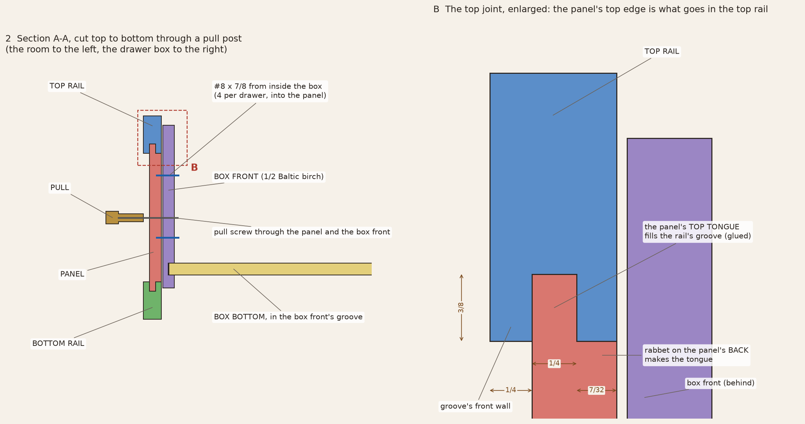
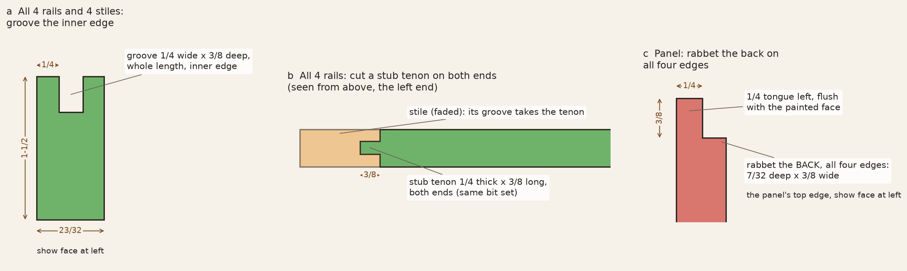
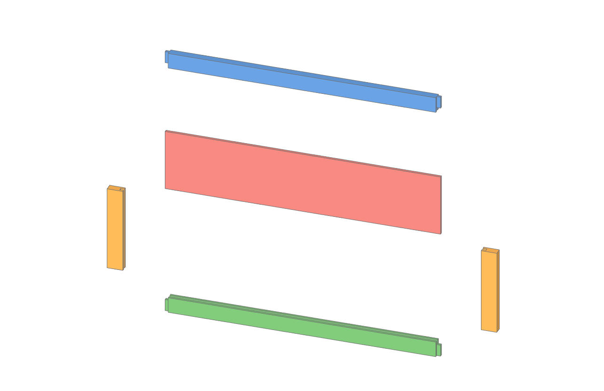
The five parts per front. Both rails are the same part; the one on top is turned groove-down. Dry fit everything before glue.
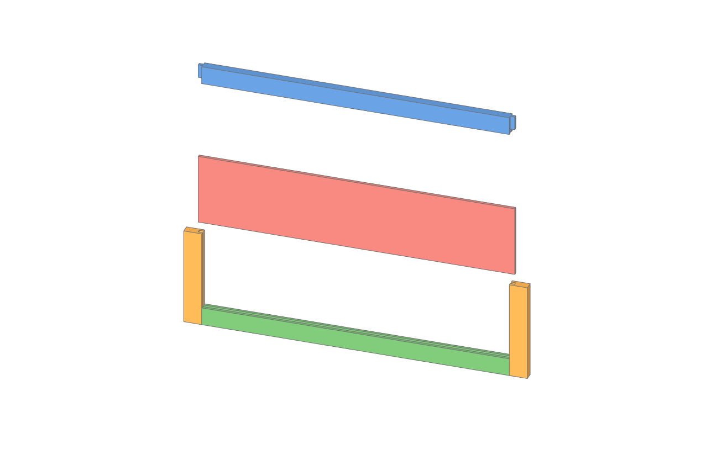
Glue the bottom rail's tenons into the stiles' grooves, making a U. Everything else drops in from the top.
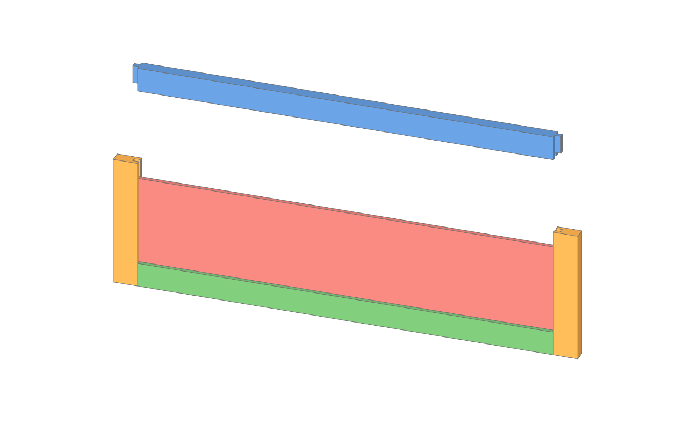
Glue the panel's grooves and slide it down the stile grooves until its bottom tongue sits in the bottom rail. Then press the top rail down: its groove takes the panel's top tongue and its tenons go into the stiles. The plywood does not move, so glue it all round.
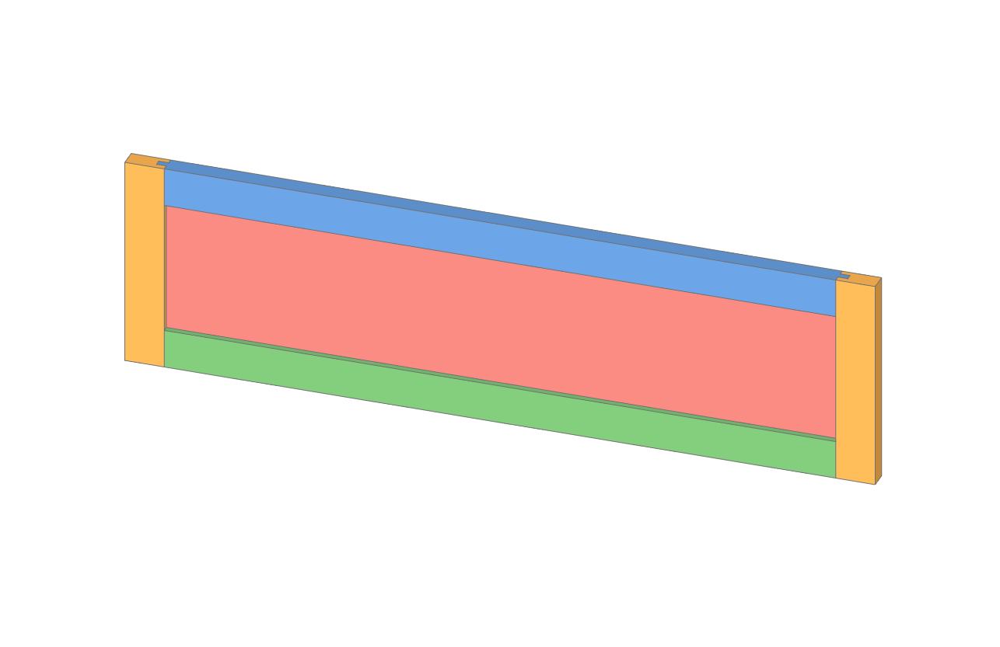
Clamp across the rails, check the diagonals match, let it cure. Overall 28-9/16 x 8-1/8. Prime and paint white.
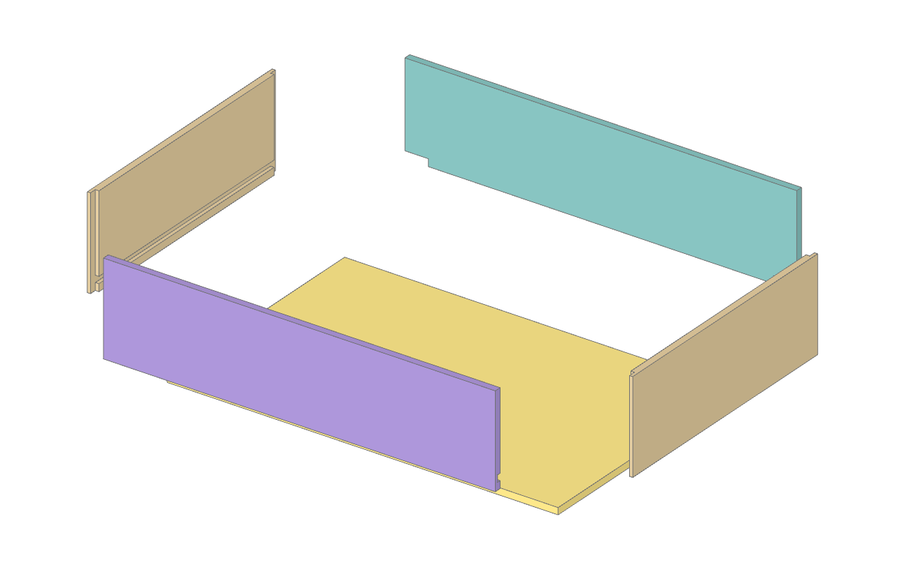
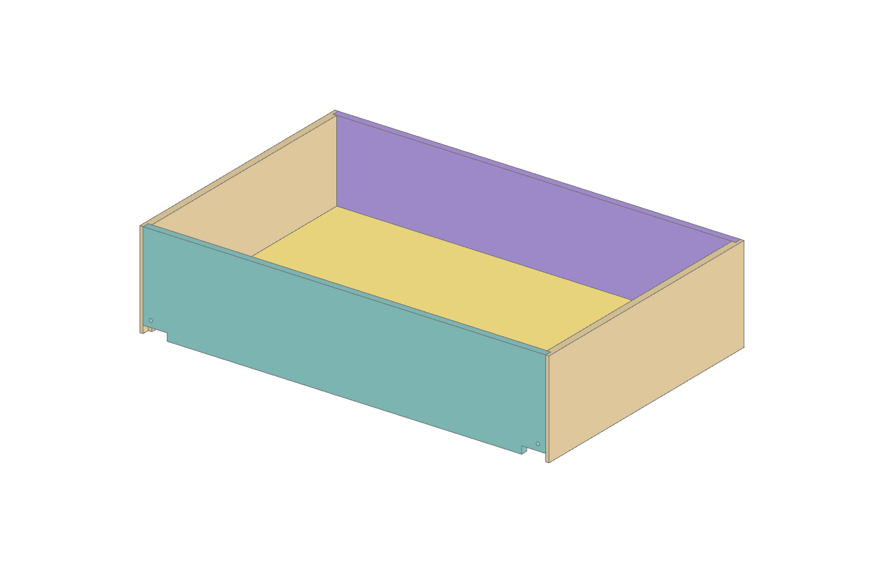
Glue the front and back into the sides' rabbets with the bottom in the side and front grooves. The bottom butts the back's inside face; pre-drill 3/32 pilots into its edge through the back's 4 holes and drive #6 x 1 screws. Check square. Clip the Blum locking devices under the bottom at the front corners.
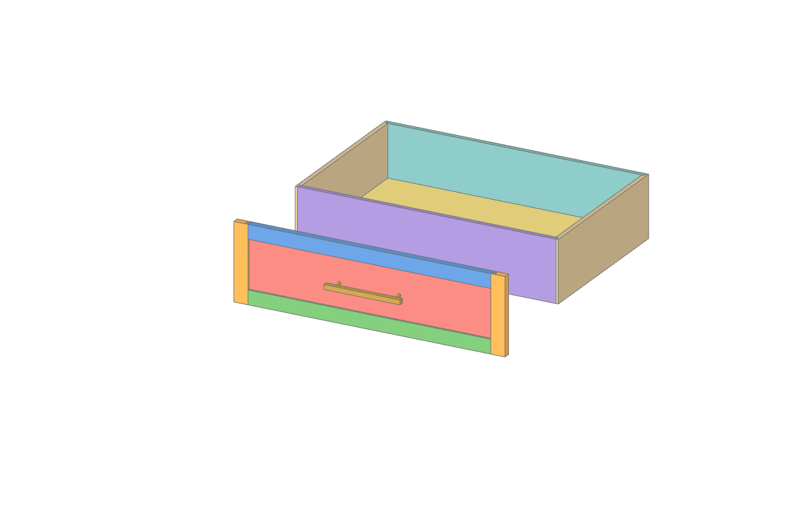
Set the box on its runners. Hold the front in place with 1/8 spacers for the reveals, its bottom flush with the case underside. Clamp it to the box front and drive 4 #8 x 7/8 pre-drilled screws from inside the box through the oversize holes. The holes let you nudge the front square before the last turn.
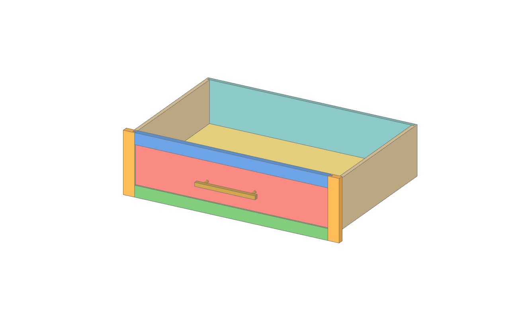
Drill for the 8 in brass pull through the panel and the box front together, so the holes line up, and bolt it on. Section A-A shows the screw path.
As drawn, all four #8 x 7/8 screws go into the panel, 3-1/4 and 5-3/4 in up from the bottom of the front. That is about 11/32 into 1/2 plywood, about 1/8 short of the painted face. The cut list's "best bite into the top rail" is wrong: the holes miss the rails. A stronger option is to move the holes 1 in in from each end of the box front, so the screws go into the solid poplar stiles.